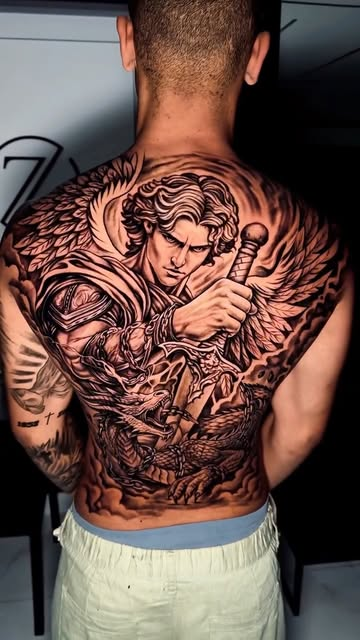

O processo Em cinco cenas
Da ideia
à pele
Do primeiro recado ao último cuidado com a cicatrização. Você sabe o que vai acontecer em cada etapa.
-
Ideia e referência
Pelo site, em dois minutosVocê escolhe o tipo de projeto, conta a ideia, o local do corpo e o tamanho, e anexa até cinco imagens de referência. Para retrato, mande a foto da pessoa com boa luz. Para cobertura, fotos da tattoo antiga.
- Já tem tattoo na região? Avise no pedido.
- Não sabe o tamanho? Isso se resolve na conversa.
-
Criação do projeto
Projeto personalizadoO Zaga monta a composição para o seu corpo: o que vai em primeiro plano, de onde vem a luz, como a peça acompanha o músculo. Num fechamento, tudo vira uma cena só.
-
Aprovação
Antes de qualquer agulhaVocê vê o projeto, pede ajustes e só então fecha valor e data. Forma de pagamento e eventual sinal são combinados nessa conversa.
-
Sessões
Studio privativoPeças menores podem sair numa sessão. Fechamentos e coberturas são feitos em várias, com intervalo para a pele descansar. O número é estimado no projeto.
- Venha alimentado e bem hidratado.
- Use uma roupa que deixe a região livre.
-
Cicatrização
As primeiras semanasVocê sai com as orientações de cuidado. O realismo depende de uma boa cicatrização para o cinza assentar; se precisar de reforço depois, peça um retoque pelo site.
Depois da sessão Cuidados
O cinza assenta na cicatrização
Orientações gerais. Na sessão, siga sempre o que o Zaga indicar para a sua pele e a sua peça.
Primeiros dias
- Lave com as mãos limpas, água e sabonete neutro.
- Seque com papel toalha, sem esfregar.
- Hidrate em camada fina, várias vezes ao dia.
Evite
- Sol direto na tatuagem.
- Piscina, mar e banheira até cicatrizar.
- Coçar ou arrancar as casquinhas.
Para sempre
- Protetor solar na peça ao se expor.
- Pele hidratada mantém o contraste do preto e cinza.
- Achou alguma falha? Peça um retoque.
Vermelhidão forte, inchaço que aumenta ou secreção não são normais: procure um médico e avise o Zaga.
Perguntas Frequentes
Antes de marcar
Quanto custa um projeto?
Não existe tabela: o valor depende do tamanho, do local do corpo e do detalhe. Você recebe o orçamento depois de contar a ideia, antes de marcar a sessão.
O que é Black & Gray?
É o realismo feito só com preto e tons de cinza, usando luz e sombra para dar profundidade. É o estilo do Zaga.
Quantas sessões leva um fechamento de costas?
Depende do tamanho e da quantidade de detalhe. O número de sessões é estimado no projeto, antes de começar.
Dá para cobrir qualquer tattoo?
Depende do tamanho, da cor e de quanto a tinta antiga está carregada. Por isso a cobertura começa com uma avaliação: mande fotos da peça no pedido.
Faz retrato a partir de foto?
Sim. Mande a foto mais nítida que tiver, com boa luz no rosto. Quanto melhor a referência, mais fiel o retrato.
Onde fica o studio?
No ITC Salvador, em studio privativo. O local exato vai na confirmação do agendamento.
Como cancelo ou troco a data?
Com o código do pedido e o seu WhatsApp, você cancela pelo site até 2 horas antes. Depois disso, chame no WhatsApp.
Pronto para começar?
O primeiro passo é contar a ideia. O resto se resolve no projeto.